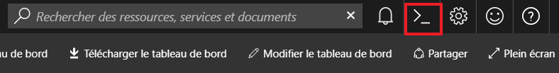
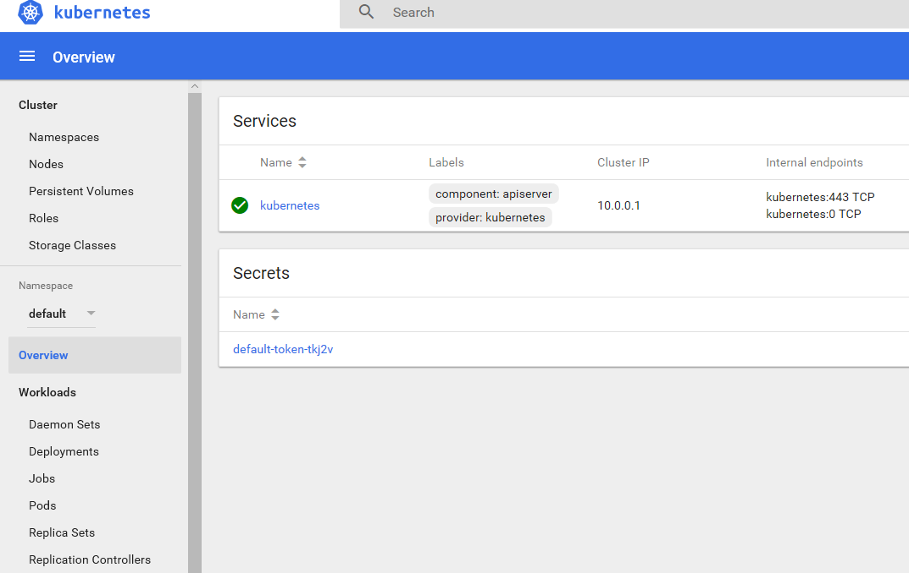
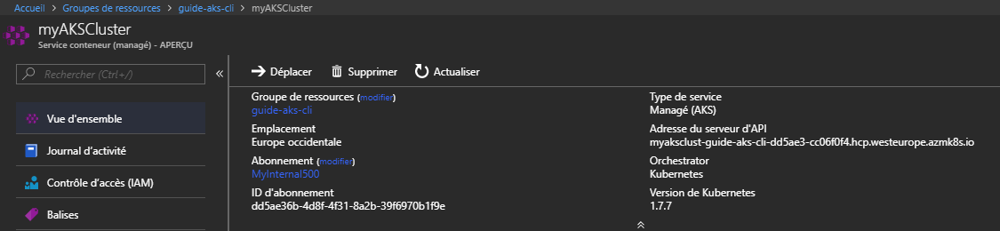
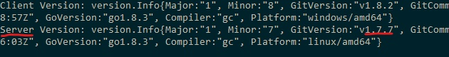
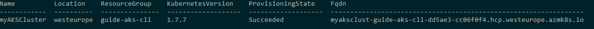

AKS - Kubernetes Guide de demarrage
Description
Cette page est un guide de demarrage rapide sur Azure AKS - Azure Container Service et ne remplace pas la documentation Azure: Azure ACS - DocumentationLes Outils
Les outils dont vous allez avoir besoin
Azure CLI
Azure CLI est une interface de commandes qui peut aussi bien etre utilisee sur Windows, Linux que Mac et qui permet d'interagir avec Microsoft Azure.Installation sur poste client
Vous trouverez la procedure complete d'installation au lien suivant: Azure CLI DocumentationLien direct vers procedure d'installation sur Windows: Installation Windows
Utilisation de la plateforme Azure
La plateforme Azure integre Azure CLI vous pouvez y acceder a partir de l'icone entoure en rouge sur l'impression d'ecran qui se trouve en haut a droite sur la plateforme. Connexion & Configuration de Azure CLI
Connection a votre compte Microsoft Azure. (Pas necessaire si vous utilisez Azure CLI sur la plateforme directement)
az login
Recuperation de la liste des souscriptions rattachees a votre compte.
az account list
Ici il faut verifier que la souscription par defaut rattachee a votre compte est bien celle que vous souhaitez utiliser pour le deploiement de votre cluster Kubernetes.
"isDefault": true,
Si ce n'est pas le cas utilisez la commande ci-dessous pour definir votre votre souscription par defaut.
az account set --subscription "subscriptionid"
Kubectl
Kubectl est l'interface de commandes vous permettant d'interagir avec votre cluster Kubernetes au travers de son API. Vous pouvez obtenir plus de details sur kubectl a partir de la Documentation.Installation avec Azure Cli
az aks install-cli
Installation de Kubectl depuis le site de Kubernetes
Vous pouvez trouver la procedure a partir du lien: Kubernetes - KubectlCreation Cle SSH
Putty est un outil simple pour vous connecter a vos ressources sur Azure en SSH. PuttyGen va vous permettre de generer votre cle necessaire a la creation de votre cluster Kubernetes. Voici le lien vers la documentation -> Creer une cle privee pour putty.Creation du Cluster
Information importante le Resource Group doit etre vide pour pouvoir creer votre cluster Kubernetes.Creation depuis la plateforme - Interface Graphique
Creation du service principal
https://docs.microsoft.com/fr-fr/azure/azure-resource-manager/resource-group-create-service-principal-portalCreation depuis Azure CLI - Lignes de commandes
Creation du service principal
Connexion a Azureaz loginVerification de la souscription par defaut Creation du Resource Group:
az group create --name guide-aks-cli --location westeurope
az aks create --resource-group guide-aks-cli --name myAKSCluster --node-count 2 --generate-ssh-keysPour plus d'options sur la commande de creation du cluster: Az Create Suite de la procedure de creation de votre cluster Kubernetes: https://docs.microsoft.com/fr-fr/azure/aks/kubernetes-walkthrough
Connexion au cluster
Azure CLI - Kubectl
Connexion au cluster grace Azure CLI>az aks get-credentials --resource-group=guide-aks-cli --name=myAKSClusterRecuperation de la liste des Pods pour verifier la connexion. Pas de pods pour le moment.
>kubectl get pods No resources found.
Azure CLI - Kubernetes Interface Web
>az aks browse --name myAKSCluster --resource-group guide-aks-cli Merged "myAKSCluster" as current context in C:\Users\ADMINI~1\AppData\Local\Temp\tmp5q0i3vpx Proxy running on http://127.0.0.1:8001/ Press CTRL+C to close the tunnel... Forwarding from 127.0.0.1:8001 -> 9090 Handling connection for 8001
Operations sur le cluster
Mise a jour du cluster
Connaitre la version de Kubernetes
Sur la plateforme: 
Avec Kubectl:
>kubectl version
Azure CLI - Commande:
>az aks show --name myAKSCluster --resource-group guide-aks-cli --output table
Deploiement Rapide de test
Lancement du container Nginx: https://hub.docker.com/_/nginx/ sur le cluster.>kubectl run --image=nginx nginx-app --port=80Recuperation de la liste des deploiements
>kubectl get deployments NAME DESIRED CURRENT UP-TO-DATE AVAILABLE AGE nginx-app 1 1 1 1 1mCreation du service pour le deploiement nginx-app, exposition du port 80.
>kubectl expose deployment nginx-app --type=LoadBalancer service "nginx-app" exposedRecuperation de la liste des services et de l'IP externe
> kubectl get services nginx-app NAME TYPE CLUSTER-IP EXTERNAL-IP PORT(S) AGE nginx-app LoadBalancer 10.0.75.83 13.81.6.228 80:30614/TCP 4mSuppression du Service et du Deploiement
>kubectl delete service nginx-app service "nginx-app" deleted
>kubectl delete deployment nginx-app deployment "nginx-app" deletedVerification que le service est bien supprime.
>kubectl get services NAME TYPE CLUSTER-IP EXTERNAL-IP PORT(S) AGE kubernetes ClusterIP 10.0.0.1443/TCP 35m